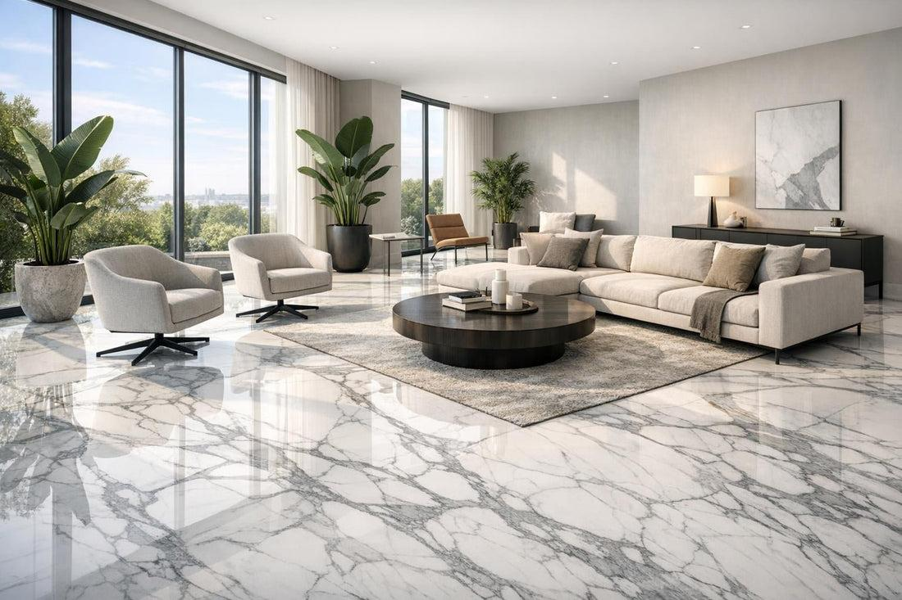
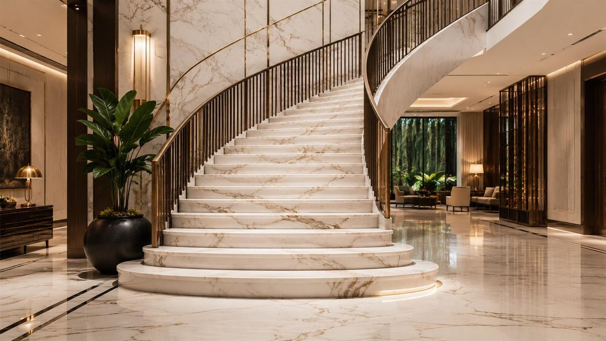
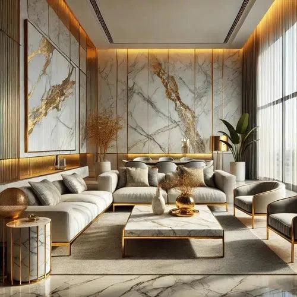

How to Care for Marble Surfaces
Simple cleaning habits and practical precautions to help maintain marble's natural appearance.
Read Article ↗Discover natural stone insights, marble care advice and thoughtful inspiration for timeless interiors.
A closer look at the materials, details and ideas that shape beautiful spaces.

FEATURED STORYLearn the essentials of caring for marble surfaces, from everyday cleaning to protecting their natural finish.
Read the Story ↗Simple cleaning habits and practical precautions to help maintain marble's natural appearance.
Read Article ↗
↗Discover ways to combine natural textures, thoughtful lighting and refined finishes.
Read Article ↗
↗Explore how different surface finishes influence the appearance and feel of stone.
Read Article ↗No articles found in this category.
Marble is a natural stone that benefits from thoughtful everyday care. Clean spills promptly, use a soft cloth and choose a pH-neutral cleaner suitable for marble.
Avoid acidic products such as vinegar and lemon juice, which can dull or etch marble. Follow the recommendations of your stone supplier for sealing and specialist maintenance.
Back to Articles ↑Natural stone can become a focal point in a living room, bathroom or entrance. Pair its unique patterns with restrained colours and complementary materials.
Consider lighting, proportions and the function of each space before choosing a stone pattern or finish.
Back to Articles ↑Polished surfaces have a reflective appearance, while honed finishes are smoother and more understated. Textured finishes can provide a different visual character and may be suitable for particular applications.
The right choice depends on the stone type, intended use, maintenance needs and desired look. Always confirm suitability with your supplier.
Back to Articles ↑Talk to Marble ACS about your ideas, materials and project requirements.
Contact Our Team ↗